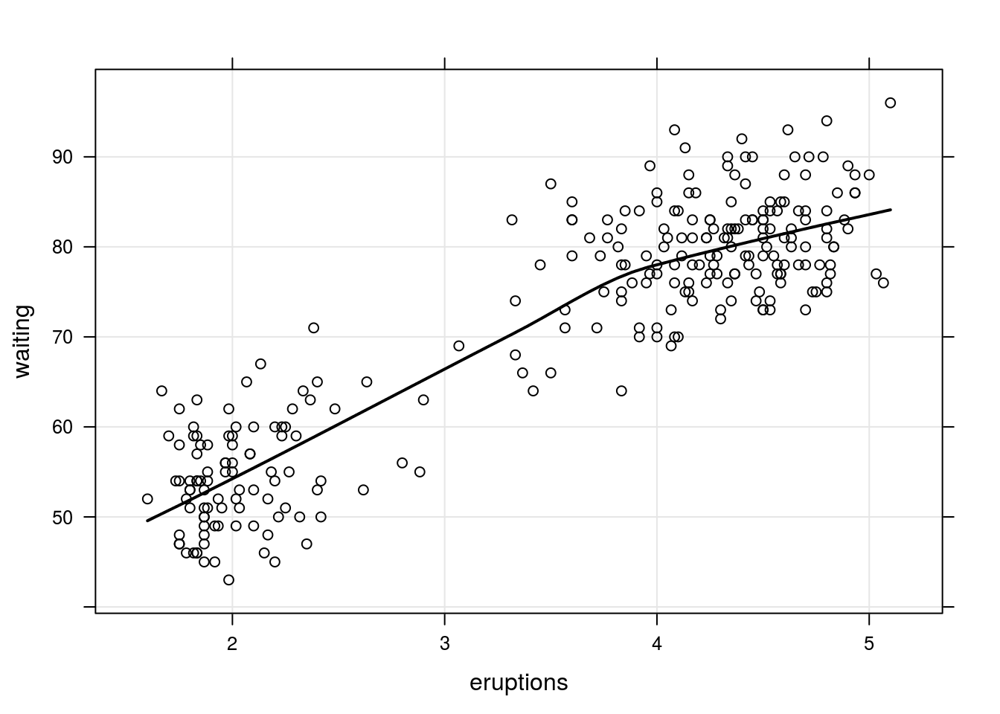
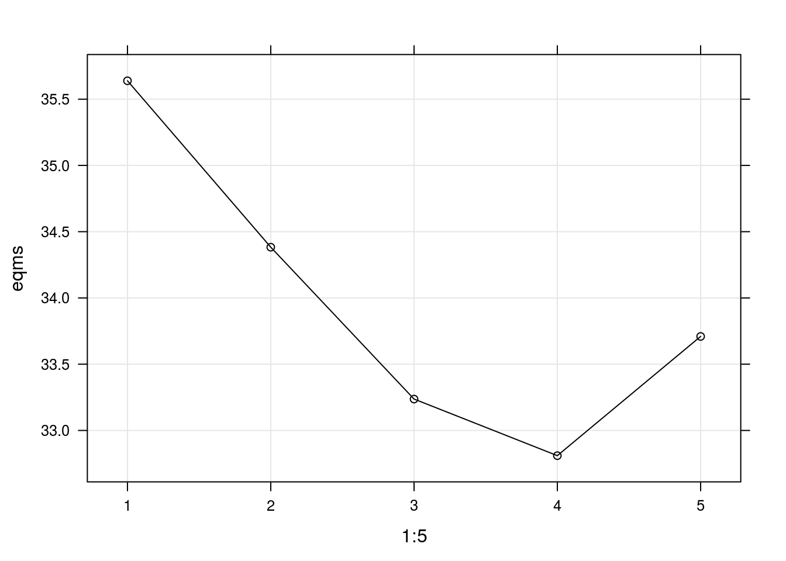
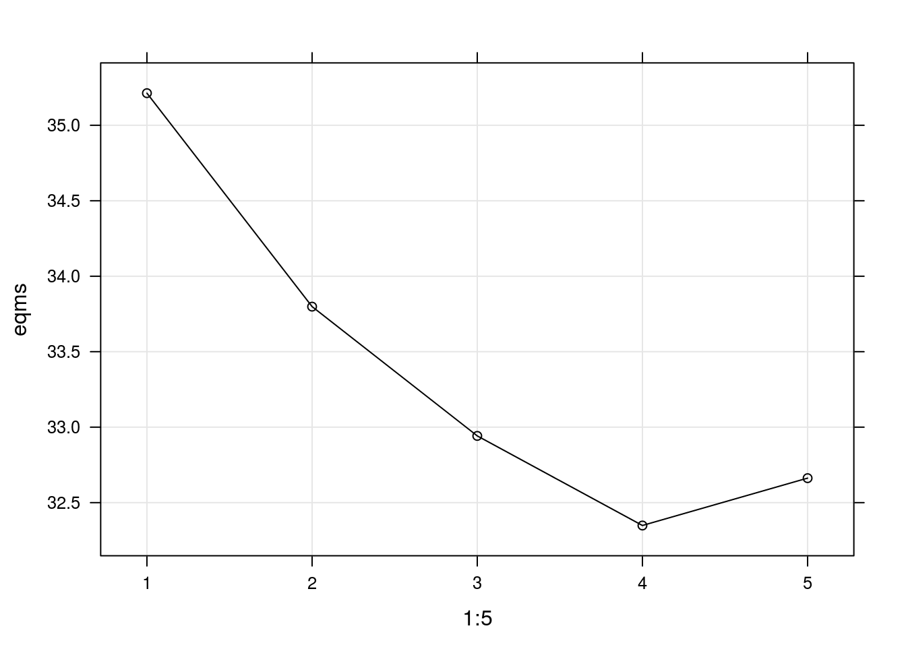
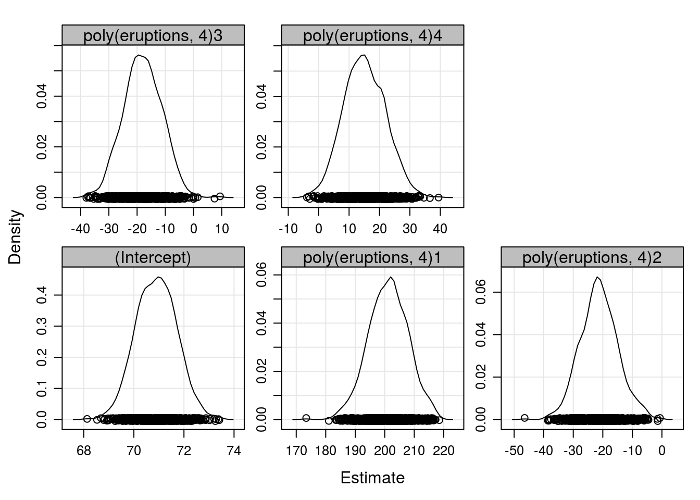

Para a aplicação dos métodos de reamostragem apresentados em sala de aula utilizaremos a conjunto faithful, do pacote datasets do software R. Estes dados se referem a um estudo sobre o tempo entre erupções do gêiser Old Faithful no Yellowstone National Park, Wyoming, Estados Unidos. Ao todo são 272 observações com registros de:
eruptions: tempo da erupção (em minutos); ewaiting: tempo de espera até a próxima erupção (em minutos)O interesse é prever o tempo de espera até a próxima erupção sabendo o tempo de duração da erupção ocorrida. Abaixo é apresentado um gráfico de dispersão entre as duas variáveis coletadas.
xyplot(waiting ~ eruptions, type = c("p", "g", "smooth"),
lwd = 2, data = faithful)
Neste trabalho prático será aplicado o método de Cross Validation, em sua versão k-fold onde dividimos a base de dados de treino em k partes. O caso particular onde k é igual ao número de observações da base, cujo leva o nome de leave-one-out também será aplicado. Para o método k-fold, o valor de k escolhido será 10, para contraste com o leave-one-out.
Esta seção é dedicada a exibição das funções programadas para realização do cálculo dos erros quadráticos médios da validação cruzada. As função foram extraídas do trabalho prático apresentado em sala por Alcides Neto, Bruna Wundervald e Marcelo Maceno e pontualmente modificadas.
## Cálculo do número de observações em cada grupo
lc <- function(n, k) {
stopifnot(k > 0 && n > 0)
aux <- n
nk <- k
i <- vector("numeric", k)
while (nk > 0) {
i[nk] <- round(aux/nk)
aux <- aux - i[nk]
nk <- nk - 1
}
return(i)
}
## Repartição do conjunto de dados em k grupos
kFold <- function(dados, k = 2, seed = NULL) {
if (!is.null(seed))
set.seed(seed)
n <- dim(dados)[1]
interval <- lc(n, k)
res <- vector("raw", k)
for (i in 1:k) {
temp <- sample(dim(dados)[1], interval[i], replace = FALSE)
res[i] <- list(dados[temp, ])
dados <- dados[-temp, ]
}
names(res) <- 1:k
return(res)
}
## Calculo do erro quadrático médio para cada grupo
calcEQM <- function(dados, k, g, seed = NULL) {
dataSet <- kFold(dados, k, seed = seed)
## eqm <- c()
eqm <- vector("numeric", k)
for (i in 1:k) {
valida <- as.data.frame(dataSet[i])
names(valida) <- names(dados)
treino <- data.frame()
for (elem in dataSet[-i]) {
treino <- rbind(treino, elem)
}
names(treino) <- names(dados)
mTreino <- lm(waiting ~ poly(eruptions, g), data = treino)
## eqmt <- c(eqmt, mean(mTreino$residuals^2))
eqm[i] <- mean((valida$waiting - predict(mTreino, valida))^2)
}
## message('Média do EQM do conjunto de Treino: ', mean(eqmt))
attr(eqm, "k.obs") <- sapply(dataSet, nrow, USE.NAMES = FALSE)
return(eqm)
}
## Calculo do erro quadrático médio de validação cruzada
cv <- function(eqm) {
k.obs <- attr(eqm, "k.obs")
return(sum(k.obs/sum(k.obs) * eqm))
}Conforme indicado abaixo têm-se a aplicação do método considerando k = 10 para um modelos Gaussiano com preditor linear descrito por polinômios de graus de 1 a 5 na variável eruptions.
eqms <- sapply(1:5, function(x) {
aux <- calcEQM(faithful, k = 10, g = x, seed = 2012)
cv(aux)
})
xyplot(eqms ~ 1:5, type = c("p", "l", "g"))
Agora considerando k = 272, ou seja, o método leave-one-out, temos:
eqms <- sapply(1:5, function(x) {
aux <- calcEQM(faithful, k = nrow(faithful), g = x, seed = 2012)
cv(aux)
})
xyplot(eqms ~ 1:5, type = c("p", "l", "g"))
Um outro método de reamostragem também apresentado e bastante utilizado é o Bootstrap que consiste, em sua forma mais simples, na reamostragem, com reposição, das observações de um conjunto de dados. Isso é útil para estimar a distribuição empírica de estatísticas e com isso conseguir intervalos de confiança para as estimativas.
Devido a sua aceitação e utilização dentre a comunidade aplicada de estatística vários softwares comerciais e gratuitos possuem rotinas para o método de reamostragem bootstrap. No R, como não poderia ser diferente, há um pacote dedicado ao método bootstrap, chamado boot. Porém devido a facilidade de programação, por ser um modelo Gaussiano e todos os métodos para estimação já estarem implementados, utilizaremos funções própria para reamostragem bootstrap.
## Realiza a reamostragem e estimação
bootlm <- function(formula, data, R, plot = FALSE) {
## formula e data argumentos passados para lm
## R número de replicas do modelo normal para estimação do intervalo
## de confianca
boots <- replicate(R, {
index <- sample(nrow(data), nrow(data), replace = TRUE)
reamostra <- data[index, ]
m0 <- lm(formula, data = reamostra)
c0 <- coef(m0)
})
out <- data.frame(Estimate = as.numeric(t(boots)),
Parameter = rep(rownames(boots), each = R))
## return(list(out, t(boots)))
attr(out, "class") <- c("ci", "data.frame")
return(out)
}
## Método plot para o objeto gerado pela função acima
plot.ci <- function(object, ...) {
densityplot(
~Estimate | Parameter, data = object, grid = TRUE,
scale = list(x = list(relation = "free",
alternating = 1),
y = list(relation = "free")),
strip = strip.custom(bg = "gray"),
between = list(x = 0.2, y = 0.3),
...
)
}
## Método para intervalos de confiança, por percentil, para o objeto
## gerado pela função acima
confint.ci <- function(object, param, level = 0.95, ...) {
aux <- aggregate(Estimate ~ Parameter, data = object,
FUN = function(x) {
probs = c((1 - level)/2, 0.5,
level + (1 - level)/2)
quantile(x, probs = probs)
})
out <- aux$Estimate
rownames(out) <- (aux$Parameter)
return(out)
}Faremos uso do modelo indicado pelos métodos k-fold e leave-one-out, com preditor linear sendo a função polinomial de 4º grau. Assim a estimação do modelo, calculando a incerteza via reamostragem bootstrap fica:
formula <- waiting ~ poly(eruptions, 4)
## Estimando R vezes os coefientes via reamostras
coefs.boot <- bootlm(formula, faithful, R = 1000)
## Visualizando a distribuição empirica das estimativas
plot(coefs.boot)
## Calculando o intervalo de confiança percentil
confint(coefs.boot)## 2.5% 50% 97.5%
## (Intercept) 69.367463 70.91912 72.514798
## poly(eruptions, 4)1 188.081981 201.48810 214.303077
## poly(eruptions, 4)2 -32.962953 -21.35942 -8.080753
## poly(eruptions, 4)3 -30.670681 -18.15570 -5.158281
## poly(eruptions, 4)4 2.503301 14.96076 28.654914cat(format(Sys.time(),
format = "Atualizado em %d de %B de %Y.\n\n"))## Atualizado em 08 de agosto de 2016.sessionInfo()## R version 3.3.1 (2016-06-21)
## Platform: x86_64-pc-linux-gnu (64-bit)
## Running under: Ubuntu 14.04.5 LTS
##
## locale:
## [1] LC_CTYPE=en_US.UTF-8 LC_NUMERIC=C
## [3] LC_TIME=pt_BR.UTF-8 LC_COLLATE=en_US.UTF-8
## [5] LC_MONETARY=pt_BR.UTF-8 LC_MESSAGES=en_US.UTF-8
## [7] LC_PAPER=pt_BR.UTF-8 LC_NAME=C
## [9] LC_ADDRESS=C LC_TELEPHONE=C
## [11] LC_MEASUREMENT=pt_BR.UTF-8 LC_IDENTIFICATION=C
##
## attached base packages:
## [1] parallel stats graphics grDevices utils datasets methods
## [8] base
##
## other attached packages:
## [1] glmnet_2.0-5 foreach_1.4.3 Matrix_1.2-6
## [4] mboost_2.6-0 stabs_0.5-1 knitr_1.12.3
## [7] latticeExtra_0.6-28 RColorBrewer_1.1-2 lattice_0.20-33
##
## loaded via a namespace (and not attached):
## [1] magrittr_1.5 MASS_7.3-45 splines_3.3.1
## [4] nnls_1.4 quadprog_1.5-5 multcomp_1.4-5
## [7] highr_0.5.1 stringr_1.0.0 tools_3.3.1
## [10] grid_3.3.1 TH.data_1.0-7 iterators_1.0.8
## [13] modeltools_0.2-21 htmltools_0.3 yaml_2.1.13
## [16] survival_2.39-4 digest_0.6.9 party_1.0-25
## [19] formatR_1.3 codetools_0.2-14 strucchange_1.5-1
## [22] evaluate_0.9 rmarkdown_0.9.6 coin_1.1-2
## [25] sandwich_2.3-4 stringi_1.0-1 compiler_3.3.1
## [28] stats4_3.3.1 mvtnorm_1.0-5 zoo_1.7-13